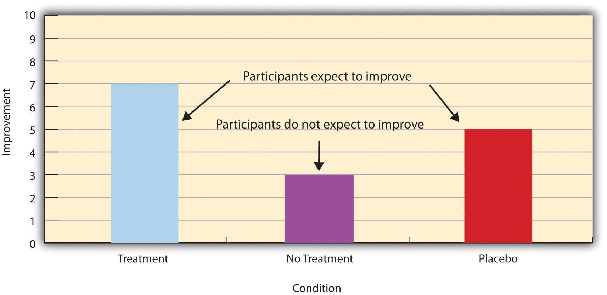

In this section, we look at some different ways to design an experiment. The primary distinction we will make is between approaches in which each participant experiences one level of the independent variable and approaches in which each participant experiences all levels of the independent variable. The former are called between-subjects experiments and the latter are called within-subjects experiments.
In a between-subjects experimentAn experiment in which each participant is tested in one condition., each participant is tested in only one condition. For example, a researcher with a sample of 100 college students might assign half of them to write about a traumatic event and the other half write about a neutral event. Or a researcher with a sample of 60 people with severe agoraphobia (fear of open spaces) might assign 20 of them to receive each of three different treatments for that disorder. It is essential in a between-subjects experiment that the researcher assign participants to conditions so that the different groups are, on average, highly similar to each other. Those in a trauma condition and a neutral condition, for example, should include a similar proportion of men and women, and they should have similar average intelligence quotients (IQs), similar average levels of motivation, similar average numbers of health problems, and so on. This is a matter of controlling these extraneous participant variables across conditions so that they do not become confounding variables.
The primary way that researchers accomplish this kind of control of extraneous variables across conditions is called random assignmentThe assignment of participants to different conditions according to a random procedure, such as flipping a coin, rolling a die, or using a random number generator., which means using a random process to decide which participants are tested in which conditions. Do not confuse random assignment with random sampling. Random sampling is a method for selecting a sample from a population, and it is rarely used in psychological research. Random assignment is a method for assigning participants in a sample to the different conditions, and it is an important element of all experimental research in psychology and other fields too.
In its strictest sense, random assignment should meet two criteria. One is that each participant has an equal chance of being assigned to each condition (e.g., a 50% chance of being assigned to each of two conditions). The second is that each participant is assigned to a condition independently of other participants. Thus one way to assign participants to two conditions would be to flip a coin for each one. If the coin lands heads, the participant is assigned to Condition A, and if it lands tails, the participant is assigned to Condition B. For three conditions, one could use a computer to generate a random integer from 1 to 3 for each participant. If the integer is 1, the participant is assigned to Condition A; if it is 2, the participant is assigned to Condition B; and if it is 3, the participant is assigned to Condition C. In practice, a full sequence of conditions—one for each participant expected to be in the experiment—is usually created ahead of time, and each new participant is assigned to the next condition in the sequence as he or she is tested. When the procedure is computerized, the computer program often handles the random assignment.
One problem with coin flipping and other strict procedures for random assignment is that they are likely to result in unequal sample sizes in the different conditions. Unequal sample sizes are generally not a serious problem, and you should never throw away data you have already collected to achieve equal sample sizes. However, for a fixed number of participants, it is statistically most efficient to divide them into equal-sized groups. It is standard practice, therefore, to use a kind of modified random assignment that keeps the number of participants in each group as similar as possible. One approach is block randomizationA method of randomly assigning participants that guarantees that the condition sample sizes are equal or almost equal. A random procedure is used to assign the first k participants into the k conditions, and then to assign the next k participants into the k conditions, and so on until all the participants have been assigned.. In block randomization, all the conditions occur once in the sequence before any of them is repeated. Then they all occur again before any of them is repeated again. Within each of these “blocks,” the conditions occur in a random order. Again, the sequence of conditions is usually generated before any participants are tested, and each new participant is assigned to the next condition in the sequence. Table 6.2 "Block Randomization Sequence for Assigning Nine Participants to Three Conditions" shows such a sequence for assigning nine participants to three conditions. The Research Randomizer website (http://www.randomizer.org) will generate block randomization sequences for any number of participants and conditions. Again, when the procedure is computerized, the computer program often handles the block randomization.
Table 6.2 Block Randomization Sequence for Assigning Nine Participants to Three Conditions
| Participant | Condition |
|---|---|
| 1 | A |
| 2 | C |
| 3 | B |
| 4 | B |
| 5 | C |
| 6 | A |
| 7 | C |
| 8 | B |
| 9 | A |
Random assignment is not guaranteed to control all extraneous variables across conditions. It is always possible that just by chance, the participants in one condition might turn out to be substantially older, less tired, more motivated, or less depressed on average than the participants in another condition. However, there are some reasons that this is not a major concern. One is that random assignment works better than one might expect, especially for large samples. Another is that the inferential statistics that researchers use to decide whether a difference between groups reflects a difference in the population takes the “fallibility” of random assignment into account. Yet another reason is that even if random assignment does result in a confounding variable and therefore produces misleading results, this is likely to be detected when the experiment is replicated. The upshot is that random assignment to conditions—although not infallible in terms of controlling extraneous variables—is always considered a strength of a research design.
Between-subjects experiments are often used to determine whether a treatment works. In psychological research, a treatmentAn intervention intended to change people’s behavior for the better. is any intervention meant to change people’s behavior for the better. This includes psychotherapies and medical treatments for psychological disorders but also interventions designed to improve learning, promote conservation, reduce prejudice, and so on. To determine whether a treatment works, participants are randomly assigned to either a treatment conditionA condition in a study in which participants receive some treatment of interest., in which they receive the treatment, or a control conditionA condition in a study in which participants do not receive the treatment of interest., in which they do not receive the treatment. If participants in the treatment condition end up better off than participants in the control condition—for example, they are less depressed, learn faster, conserve more, express less prejudice—then the researcher can conclude that the treatment works. In research on the effectiveness of psychotherapies and medical treatments, this type of experiment is often called a randomized clinical trialAn experiment designed to test the effectiveness of a psychological or medical treatment..
There are different types of control conditions. In a no-treatment control conditionA control condition in which participants receive no treatment whatsoever—not even a placebo., participants receive no treatment whatsoever. One problem with this approach, however, is the existence of placebo effects. A placeboA treatment that lacks any active ingredient or element that should make it effective. is a simulated treatment that lacks any active ingredient or element that should make it effective, and a placebo effectThe positive effect of a placebo. is a positive effect of such a treatment. Many folk remedies that seem to work—such as eating chicken soup for a cold or placing soap under the bedsheets to stop nighttime leg cramps—are probably nothing more than placebos. Although placebo effects are not well understood, they are probably driven primarily by people’s expectations that they will improve. Having the expectation to improve can result in reduced stress, anxiety, and depression, which can alter perceptions and even improve immune system functioning (Price, Finniss, & Benedetti, 2008).Price, D. D., Finniss, D. G., & Benedetti, F. (2008). A comprehensive review of the placebo effect: Recent advances and current thought. Annual Review of Psychology, 59, 565–590.
Placebo effects are interesting in their own right (see Note 6.28 "The Powerful Placebo"), but they also pose a serious problem for researchers who want to determine whether a treatment works. Figure 6.2 "Hypothetical Results From a Study Including Treatment, No-Treatment, and Placebo Conditions" shows some hypothetical results in which participants in a treatment condition improved more on average than participants in a no-treatment control condition. If these conditions (the two leftmost bars in Figure 6.2 "Hypothetical Results From a Study Including Treatment, No-Treatment, and Placebo Conditions") were the only conditions in this experiment, however, one could not conclude that the treatment worked. It could be instead that participants in the treatment group improved more because they expected to improve, while those in the no-treatment control condition did not.
Figure 6.2 Hypothetical Results From a Study Including Treatment, No-Treatment, and Placebo Conditions
Fortunately, there are several solutions to this problem. One is to include a placebo control conditionA control condition in which participants receive a placebo., in which participants receive a placebo that looks much like the treatment but lacks the active ingredient or element thought to be responsible for the treatment’s effectiveness. When participants in a treatment condition take a pill, for example, then those in a placebo control condition would take an identical-looking pill that lacks the active ingredient in the treatment (a “sugar pill”). In research on psychotherapy effectiveness, the placebo might involve going to a psychotherapist and talking in an unstructured way about one’s problems. The idea is that if participants in both the treatment and the placebo control groups expect to improve, then any improvement in the treatment group over and above that in the placebo control group must have been caused by the treatment and not by participants’ expectations. This is what is shown by a comparison of the two outer bars in Figure 6.2 "Hypothetical Results From a Study Including Treatment, No-Treatment, and Placebo Conditions".
Of course, the principle of informed consent requires that participants be told that they will be assigned to either a treatment or a placebo control condition—even though they cannot be told which until the experiment ends. In many cases the participants who had been in the control condition are then offered an opportunity to have the real treatment. An alternative approach is to use a waitlist control conditionA control condition in which participants are put on a waitlist to receive the treatment after the study is completed., in which participants are told that they will receive the treatment but must wait until the participants in the treatment condition have already received it. This allows researchers to compare participants who have received the treatment with participants who are not currently receiving it but who still expect to improve (eventually). A final solution to the problem of placebo effects is to leave out the control condition completely and compare any new treatment with the best available alternative treatment. For example, a new treatment for simple phobia could be compared with standard exposure therapy. Because participants in both conditions receive a treatment, their expectations about improvement should be similar. This approach also makes sense because once there is an effective treatment, the interesting question about a new treatment is not simply “Does it work?” but “Does it work better than what is already available?”
Many people are not surprised that placebos can have a positive effect on disorders that seem fundamentally psychological, including depression, anxiety, and insomnia. However, placebos can also have a positive effect on disorders that most people think of as fundamentally physiological. These include asthma, ulcers, and warts (Shapiro & Shapiro, 1999).Shapiro, A. K., & Shapiro, E. (1999). The powerful placebo: From ancient priest to modern physician. Baltimore, MD: Johns Hopkins University Press. There is even evidence that placebo surgery—also called “sham surgery”—can be as effective as actual surgery.
Medical researcher J. Bruce Moseley and his colleagues conducted a study on the effectiveness of two arthroscopic surgery procedures for osteoarthritis of the knee (Moseley et al., 2002).Moseley, J. B., O’Malley, K., Petersen, N. J., Menke, T. J., Brody, B. A., Kuykendall, D. H., … Wray, N. P. (2002). A controlled trial of arthroscopic surgery for osteoarthritis of the knee. The New England Journal of Medicine, 347, 81–88. The control participants in this study were prepped for surgery, received a tranquilizer, and even received three small incisions in their knees. But they did not receive the actual arthroscopic surgical procedure. The surprising result was that all participants improved in terms of both knee pain and function, and the sham surgery group improved just as much as the treatment groups. According to the researchers, “This study provides strong evidence that arthroscopic lavage with or without débridement [the surgical procedures used] is not better than and appears to be equivalent to a placebo procedure in improving knee pain and self-reported function” (p. 85).
In a within-subjects experimentAn experiment in which each participant is tested in all conditions., each participant is tested under all conditions. Consider an experiment on the effect of a defendant’s physical attractiveness on judgments of his guilt. Again, in a between-subjects experiment, one group of participants would be shown an attractive defendant and asked to judge his guilt, and another group of participants would be shown an unattractive defendant and asked to judge his guilt. In a within-subjects experiment, however, the same group of participants would judge the guilt of both an attractive and an unattractive defendant.
The primary advantage of this approach is that it provides maximum control of extraneous participant variables. Participants in all conditions have the same mean IQ, same socioeconomic status, same number of siblings, and so on—because they are the very same people. Within-subjects experiments also make it possible to use statistical procedures that remove the effect of these extraneous participant variables on the dependent variable and therefore make the data less “noisy” and the effect of the independent variable easier to detect. We will look more closely at this idea later in the book.
The primary disadvantage of within-subjects designs is that they can result in carryover effects. A carryover effectAn effect of being tested in one condition on participants’ behavior in later conditions. is an effect of being tested in one condition on participants’ behavior in later conditions. One type of carryover effect is a practice effectA carryover effect in which participants perform better on a task in later conditions because they have had a chance to practice., where participants perform a task better in later conditions because they have had a chance to practice it. Another type is a fatigue effectA carryover effect in which participants perform worse on a task in later conditions because they have become tired or bored., where participants perform a task worse in later conditions because they become tired or bored. Being tested in one condition can also change how participants perceive stimuli or interpret their task in later conditions. This is called a context effectAn unintended effect of the context in which a response is made. In within-subjects experiments, this can be an effect of being tested in one condition on how participants perceive stimuli or interpret their task and therefore how they respond in later conditions. In survey research, this can be an effect of the surrounding items or the response scale on responses to a particular item.. For example, an average-looking defendant might be judged more harshly when participants have just judged an attractive defendant than when they have just judged an unattractive defendant. Within-subjects experiments also make it easier for participants to guess the hypothesis. For example, a participant who is asked to judge the guilt of an attractive defendant and then is asked to judge the guilt of an unattractive defendant is likely to guess that the hypothesis is that defendant attractiveness affects judgments of guilt. This could lead the participant to judge the unattractive defendant more harshly because he thinks this is what he is expected to do. Or it could make participants judge the two defendants similarly in an effort to be “fair.”
Carryover effects can be interesting in their own right. (Does the attractiveness of one person depend on the attractiveness of other people that we have seen recently?) But when they are not the focus of the research, carryover effects can be problematic. Imagine, for example, that participants judge the guilt of an attractive defendant and then judge the guilt of an unattractive defendant. If they judge the unattractive defendant more harshly, this might be because of his unattractiveness. But it could be instead that they judge him more harshly because they are becoming bored or tired. In other words, the order of the conditions is a confounding variable. The attractive condition is always the first condition and the unattractive condition the second. Thus any difference between the conditions in terms of the dependent variable could be caused by the order of the conditions and not the independent variable itself.
There is a solution to the problem of order effects, however, that can be used in many situations. It is counterbalancingSystematically varying the order of conditions across participants., which means testing different participants in different orders. For example, some participants would be tested in the attractive defendant condition followed by the unattractive defendant condition, and others would be tested in the unattractive condition followed by the attractive condition. With three conditions, there would be six different orders (ABC, ACB, BAC, BCA, CAB, and CBA), so some participants would be tested in each of the six orders. With counterbalancing, participants are assigned to orders randomly, using the techniques we have already discussed. Thus random assignment plays an important role in within-subjects designs just as in between-subjects designs. Here, instead of randomly assigning to conditions, they are randomly assigned to different orders of conditions. In fact, it can safely be said that if a study does not involve random assignment in one form or another, it is not an experiment.
There are two ways to think about what counterbalancing accomplishes. One is that it controls the order of conditions so that it is no longer a confounding variable. Instead of the attractive condition always being first and the unattractive condition always being second, the attractive condition comes first for some participants and second for others. Likewise, the unattractive condition comes first for some participants and second for others. Thus any overall difference in the dependent variable between the two conditions cannot have been caused by the order of conditions. A second way to think about what counterbalancing accomplishes is that if there are carryover effects, it makes it possible to detect them. One can analyze the data separately for each order to see whether it had an effect.
Researcher Michael Birnbaum has argued that the lack of context provided by between-subjects designs is often a bigger problem than the context effects created by within-subjects designs. To demonstrate this, he asked one group of participants to rate how large the number 9 was on a 1-to-10 rating scale and another group to rate how large the number 221 was on the same 1-to-10 rating scale (Birnbaum, 1999).Birnbaum, M. H. (1999). How to show that 9 > 221: Collect judgments in a between-subjects design. Psychological Methods, 4, 243–249. Participants in this between-subjects design gave the number 9 a mean rating of 5.13 and the number 221 a mean rating of 3.10. In other words, they rated 9 as larger than 221! According to Birnbaum, this is because participants spontaneously compared 9 with other one-digit numbers (in which case it is relatively large) and compared 221 with other three-digit numbers (in which case it is relatively small).
So far, we have discussed an approach to within-subjects designs in which participants are tested in one condition at a time. There is another approach, however, that is often used when participants make multiple responses in each condition. Imagine, for example, that participants judge the guilt of 10 attractive defendants and 10 unattractive defendants. Instead of having people make judgments about all 10 defendants of one type followed by all 10 defendants of the other type, the researcher could present all 20 defendants in a sequence that mixed the two types. The researcher could then compute each participant’s mean rating for each type of defendant. Or imagine an experiment designed to see whether people with social anxiety disorder remember negative adjectives (e.g., “stupid,” “incompetent”) better than positive ones (e.g., “happy,” “productive”). The researcher could have participants study a single list that includes both kinds of words and then have them try to recall as many words as possible. The researcher could then count the number of each type of word that was recalled. There are many ways to determine the order in which the stimuli are presented, but one common way is to generate a different random order for each participant.
Almost every experiment can be conducted using either a between-subjects design or a within-subjects design. This means that researchers must choose between the two approaches based on their relative merits for the particular situation.
Between-subjects experiments have the advantage of being conceptually simpler and requiring less testing time per participant. They also avoid carryover effects without the need for counterbalancing. Within-subjects experiments have the advantage of controlling extraneous participant variables, which generally reduces noise in the data and makes it easier to detect a relationship between the independent and dependent variables.
A good rule of thumb, then, is that if it is possible to conduct a within-subjects experiment (with proper counterbalancing) in the time that is available per participant—and you have no serious concerns about carryover effects—this is probably the best option. If a within-subjects design would be difficult or impossible to carry out, then you should consider a between-subjects design instead. For example, if you were testing participants in a doctor’s waiting room or shoppers in line at a grocery store, you might not have enough time to test each participant in all conditions and therefore would opt for a between-subjects design. Or imagine you were trying to reduce people’s level of prejudice by having them interact with someone of another race. A within-subjects design with counterbalancing would require testing some participants in the treatment condition first and then in a control condition. But if the treatment works and reduces people’s level of prejudice, then they would no longer be suitable for testing in the control condition. This is true for many designs that involve a treatment meant to produce long-term change in participants’ behavior (e.g., studies testing the effectiveness of psychotherapy). Clearly, a between-subjects design would be necessary here.
Remember also that using one type of design does not preclude using the other type in a different study. There is no reason that a researcher could not use both a between-subjects design and a within-subjects design to answer the same research question. In fact, professional researchers often do exactly this.
Discussion: For each of the following topics, list the pros and cons of a between-subjects and within-subjects design and decide which would be better.